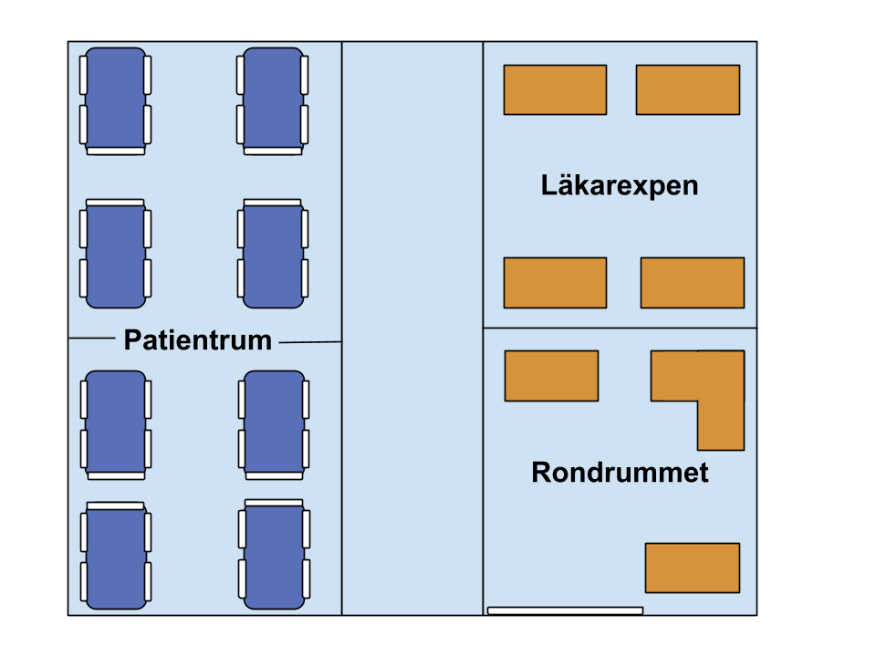

Avdelningen
Lär dig ronden, rum för rum.
Välj en plats på kartan. Varje rum samlar ett eget moment – från undersökning vid sängen till förberedelser och gemensamma beslut på ronden.

Avdelningen
Välj en plats på kartan. Varje rum samlar ett eget moment – från undersökning vid sängen till förberedelser och gemensamma beslut på ronden.
